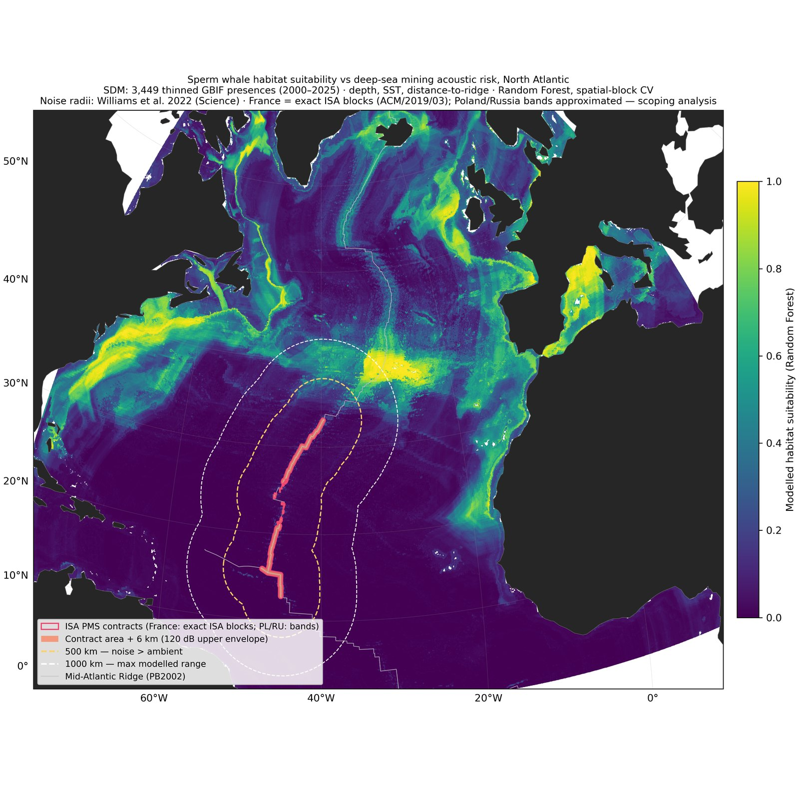

01 · Summer 2026 Complete
Sperm Whale Foraging Habitat and Deep-Sea Mining Acoustic Risk, North Atlantic
Species distribution modelling of sperm whale foraging habitat from 71,104 GBIF occurrence records, overlaid with ISA deep-sea mining exploration contracts and published acoustic impact zones. An adversarial verification pass overturned the project's original headline finding, which is documented rather than quietly corrected.
View project →